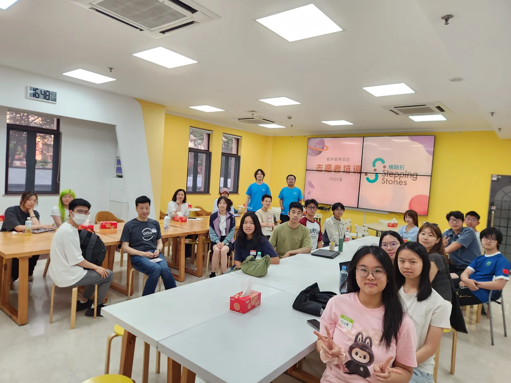

An approachable first step
Through the SteppingStone voluntary programme, I taught programming and introductory AI concepts to second-grade students. I wanted the lessons to feel accessible and give students something they could create themselves.
07 / STEPPINGSTONE / CREATIVE LEARNING
Making room for someone else to begin.
Sharing programming and AI concepts with young learners, with an emphasis on making their first ideas possible.

THE STORY
Through the SteppingStone voluntary programme, I taught programming and introductory AI concepts to second-grade students. I wanted the lessons to feel accessible and give students something they could create themselves.
I prepared simple games and animations using ScratchJr, showing how blocks work together to control movement, change scenes, and build a complete project. The examples gave students a starting point for their own experiments.
I left room for students to modify the projects and test their own ideas. Seeing them begin to make independent choices changed how I thought about teaching: the goal was to help them feel able to continue exploring.